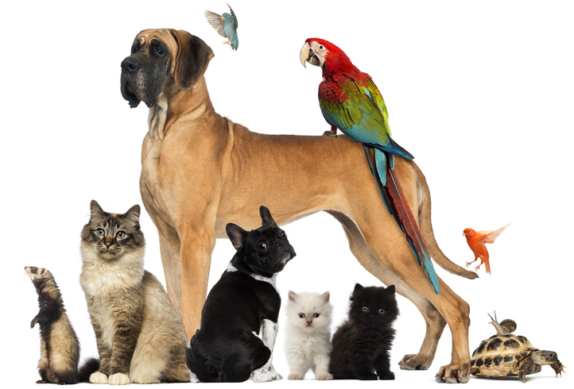
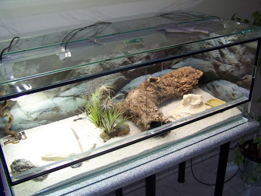
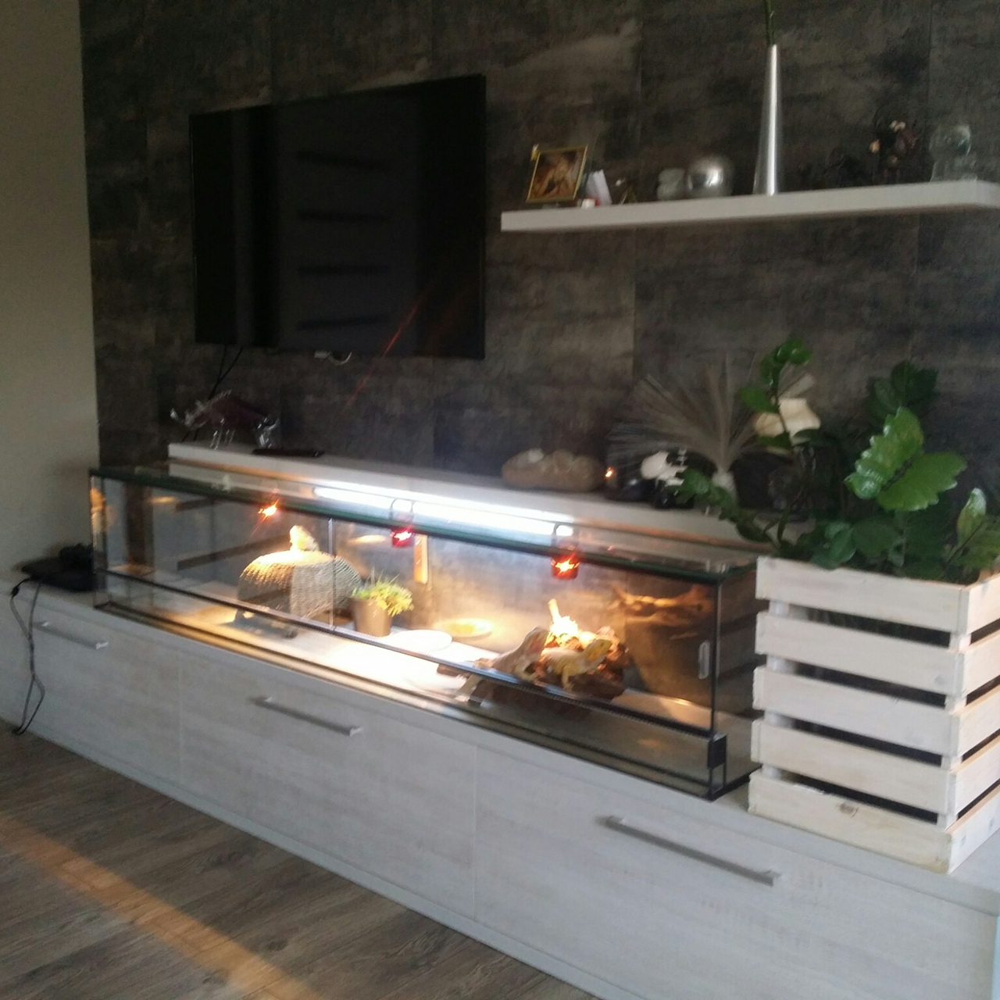
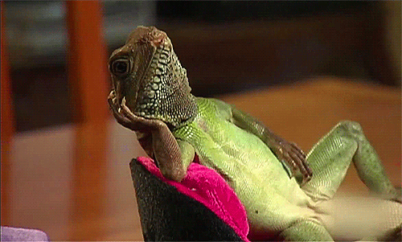
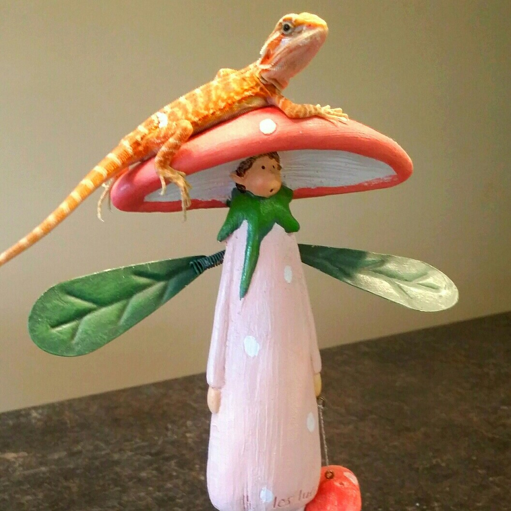

Блог Живой Мир Агама39РУ
ДОБРО ПОЖАЛОВАТЬ В БЛОГ
В данном видео, вы можете ознакомиться с управлением и интерфейсом нашего блога!
Так же вы можете включить приятную музыку, для сопровождения по нашему блогу.
Алина
В определенный период жизни любой человек задумывается о заведении домашнего животного дома. Желание завести питомца может возникнуть как психологическая потребность в общении или заботе о ком-то. Не стоит ждать, пока в какой-то момент ребенок сам захочет себе любимца, нужно позаботиться о своем малыше самим, ведь иметь домашнее животное — чрезвычайно полезно для развития детей. Домашние животные — источник ласки и тепла. А также огромного количества положительных эмоций. Если у вас в жизни не хватает этого — заведите питомца, который станет настоящим лучиком солнца в вашем доме и всегда будет помогать справляться с тяжелыми ситуациями в жизни. Более того, питомцы обычно любят хозяев больше, чем самих себя, а значит вы будете утопать во внимании своего любимца и всегда встречены с радостью и любовью.
Животные делают детей более социальными, им легче вливаться в новый коллектив, знакомиться с другими людьми, общаться и дружить. Да и ребенку с животным гораздо легче завести друзей, ведь другим детям интересно подойти, погладить, поиграть с питомцем, а это уже даст толчок подружиться или познакомиться. Завести животное стоит, если вы хотите на практике воспитать в ребенке ответственность и дисциплинированность, со временем дав ему понять: питомец — не игрушка, о нем нужно заботиться, кормить, выгуливать, ухаживать и смотреть за его безопасностью. Таким образом, вы с самого детства приучите детей к заботе о существах слабее их самих, умению планировать свои действия наперед, контролировать свое поведение, любви и состраданию, и даже сможете заложить фундамент, который в будущем подскажет как нужно заботиться и о своих собственных детях. Питомец поможет малышу познакомиться с окружающим миром, покажет, что не всех животных нужно бояться, ведь они могут быть милыми и добрыми, если к ним хорошо относиться. Самое главное — питомец сделает детство ребенка счастливым и подарит огромное количество радостных моментов, которые он запомнит на свою жизнь.
Террариум на заказ
Террариум является домом для вашего питомца. Террариум — ёмкость, в которой созданы необходимые условия для содержания некоторых животных, а также растений. Большинство террариумов изготавливается из стекла, металлического каркаса или основы, пластмассы и древесины.

В последние десятилетия с увеличением потребностей и возможностей части населения резко возрос интерес к домашнему содержанию экзотических животных, в частности амфибий и рептилий. Причем если раньше, в советские времена,доступных питомцев такого рода насчитывалось едва ли не с десяток видов, то в настоящее время практически нет животного, которого нельзя было бы достать. В зависимости от того, животное какого вида вы собираетесь содержать, террариумы могут быть различными по форме (горизонтальный, кубический или вертикальный) и организации (сухой или акватеррариум). Террариумы горизонтального типа рекомендуются для содержания наземных или полуводных видов амфибий и рептилий, обитающих на открытых пространствах степей, пустынь и т.п. или ведущих прибрежный и полуводный образ жизни. Сюда относятся практически все виды черепах. наземные виды ящериц, змей. бесхвостых амфибий и хвостатые земноводные. Кубический и вертикальный террариумы применяют при содержании животных, одинаково использующих как горизонтальную, так и вертикальную поверхности, а также обитающих в основном на вертикальных плоскостях в кроне и на стволах деревьев, на стенах строений, скальных обрывах и т.п. В таких террариумах нуждаются хамелеоны, гекконы, анолисы, игуаны, лазающие виды змей, древесные лягушки и др. При изготовлении террариума необходимо учитывать соотношение поверхности суши и воды, диктуемое образом жизни конкретного животного, которого вы хотите содержать Например, для амфибий и рептилий, ведущих полуводный образ жизни, наиболее пригоден акватеррариум оборудованный на базе исправного (хорошо держащего воду) аквариума; суша здесь представлена тем или иным количеством островков.
Свои дополнительные вопросы вы можете отправить на нашу электронную почту
ЭЛЕКТРОННАЯ ПОЧТАЕсли либо по какой то причине вам не удалось с нами связаться, вы можете воспользоваться нашей резервной почтой. Нажав на ссылку ниже!
РЕЗЕРВНАЯ ПОЧТАПодняться вверх
Бородатая агама. Интересные факты.

Эта милая ящерица – почти идеальный питомец, как для начинающего, так и для опытного террариумиста. Такая популярность обусловлена простотой содержания, а также уникальной красотой этой ящерицы. Бородатая агама – конечно же, не хамелеон, однако она может менять свой оттенок в зависимости от настроения, самочувствия и температуры в террариуме. В дикой природе продолжительность жизни бородатой агамы составляет 7-9 лет, в неволе – дольше (до 10 лет и более). Австралийские исследователи выяснили, что слюна бородатой агамы содержит слабый яд (безопасный для человека). Отбрасывание хвоста в случае опасности для этих агам не характерно. Избежать неприятных встреч с хищниками им помогают хорошее зрение и прекрасный слух. Кроме этого они очень выручают ящерицу во время охоты. С приходом сезона размножения «борода» у самцов начинает темнеть, а для большего впечатления они надувают свою бороду. Перед самкой самец устраивает красивый брачный танец, представляющий собой ритмичные кивки головой и приподнимание на передних лапах. Если самка готова к спариванию, то она совершает различные движения хвостом и головой. В случае угрозы, бородатая агама расплющивает свое тело, раздувает «бороду» и открывает пасть – такое поведение визуально увеличивает размеры агамы и отпугивает врагов. Пол у бородатых агам определяется набором хромосом, но, если инкубация проходит при повышенных температурах, самцы развиваются в самок.
🔥Они такие классные🔥

Подняться вверх
(Нажав на данную кнопку, вы подниметесь в начало блога)
Видео
Бородатая агама
Бородатая агама — одна из самых популярных ящериц для содержания в неволе. Этот австралийский обитатель с покладистым и неагрессивным характером довольно прост в содержании.
Описание
Начнем с того, что родина агам – Центральные и Южные районы Австралии. Обитают эти экзотические животные преимущественно в засушливых каменистых местностях пустынного и полупустынного типа, сухих лесах. Размер взрослого животного составляет 50-60 см вместе с хвостом, при этом хвост в 1,5-2 раза длиннее тела. Голова имеет треугольную форму и снабжена боковыми слуховыми отверстиями. Тело имеет плоскую форму с двумя рядами шипов по бокам. Несмотря на то, что внешне эти шипы выглядят зловеще, на ощупь они мягкие и гладкие.На лапах агамы есть длинные пальцы с острыми когтями, которыми она цепляется за поверхность, отличительная черта строения головы. Передними зубами она хватает пищу, а задними – пережевывает. Так же насекомых она ловит липким язычком. Цвет кожи у агам может приобретать разный оттенок (темнеть или светлеть) в зависимости от условий окружающей среды, самочувствия и настроения.
Особенности содержания и уход
Для содержания одной взрослой бородатой агамы необходим террариум горизонтального типа объёмом 90*45*45см. Верхняя крышка террариума должна быть сетчатая, для того, чтобы обеспечить проникновение ультрафиолета, необходимого для полноценного развития животного и усвоения им кальция.
Щенки Чихуахуа
🐶Малыши Чихуахуа🐶
#чихуахуамоя #чихуа́хуа #чихуахуа #собакалучшийдруг #инстадог #чихуахуа#чихуахуапродажа #чихуахуамини #чихуахуащенки #чихуахуашка#чихуахуаблог #купитьчихуахуа #щенки#чихуахуашечка #чихуахуамаленькаясобачка #ялюблюсвоюсобаку #чихуахуакиев #собачка #собакадруг #чихуахуаспб #чихуахуапродается #Калининград #собака #друг#чихуахуашкаочаровашка #домашнийпитомец #милота #калининградскаяобласть любовь #чихуахуа любовь #любовь #чихуахуа #чихуахуамаленькаясобачка #щенок #чихуахуамальчик #чихуахуапродается #собакаулыбакаПапа

Мама
.jpg)
Фото
.jpg)
.jpg)
.jpg)
Описание
Чихуа́хуа — собака-компаньон. Считается самой маленькой собакой в мире и носит имя мексиканского штата Чиуауа. Есть предположение, что предки этой собаки жили в дикой природе, и в эпоху цивилизации тольтеков были одомашнены ими. Имеет компактный корпус и отличается бойким и смелым характером.
Подняться вверх